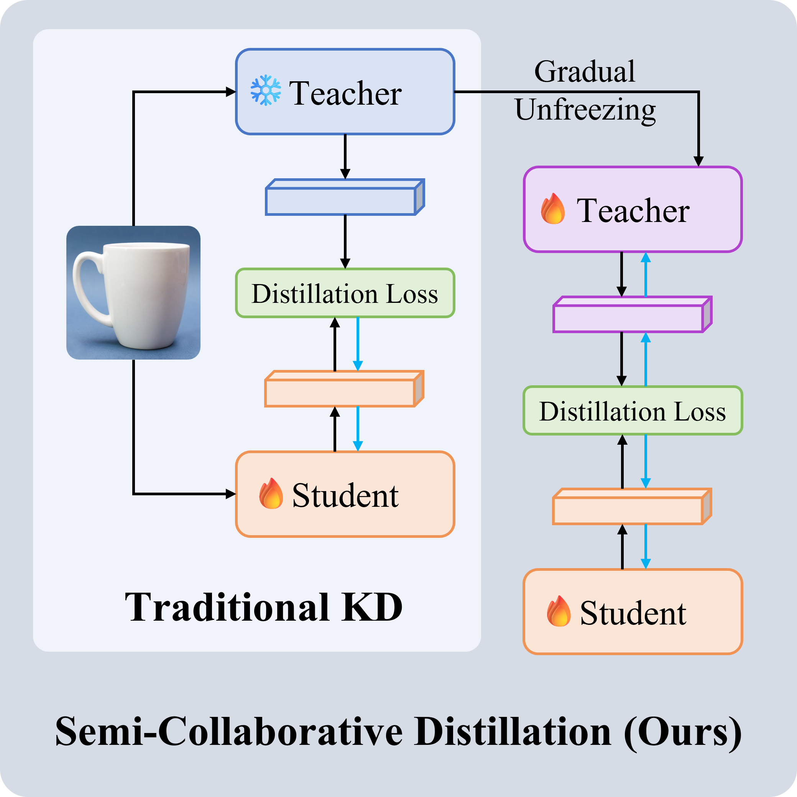
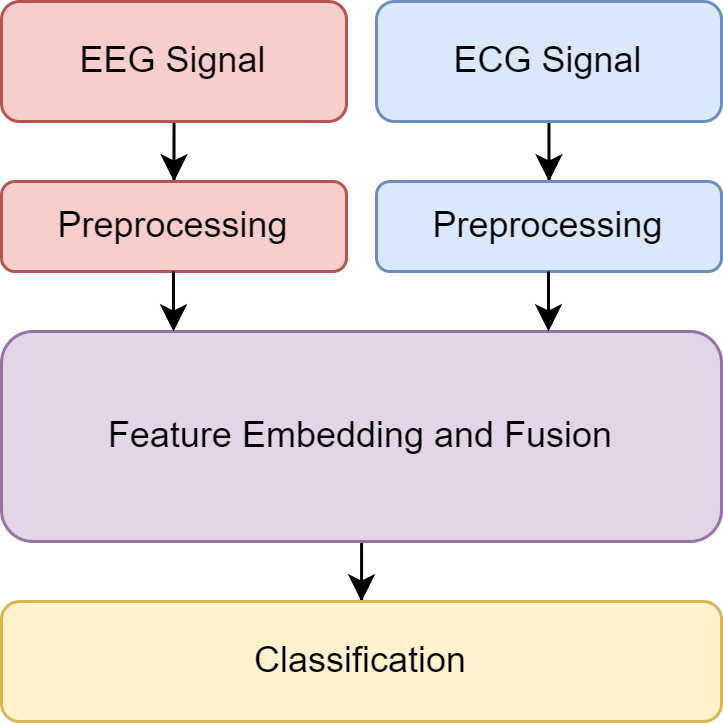
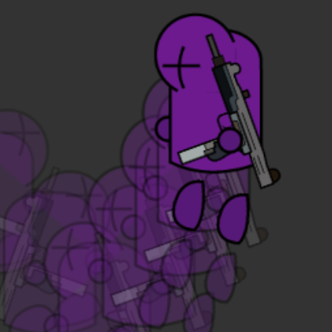
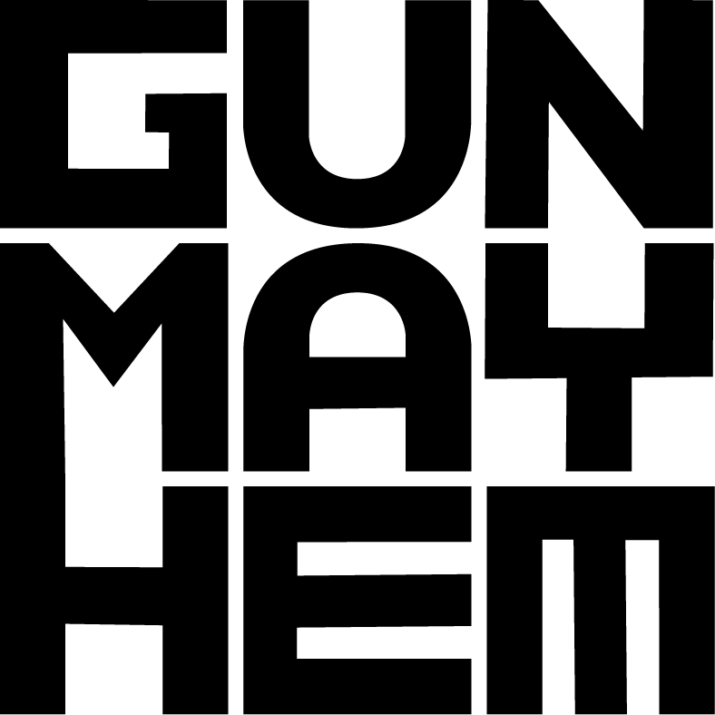
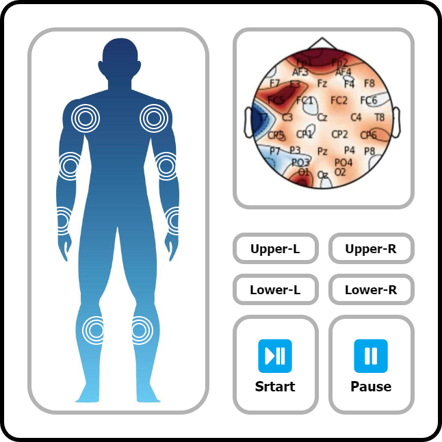

|
Haoquan Zhang 张皓泉
Hi, my name is Haoquan Zhang, a junior student majoring in Data Science at South China University of Technology (SCUT). I followed Prof. Kai Wu and Prof. Huaidong Zhang for two scientific research interns at SCUT.
I am currently collaborating with Prof. Shengfeng He @SMU, with the objective of addressing challenges in reconstructing 3D Gaussian splatting.
My ideal is to follow my interests and create simple yet enjoyable work! 🌟 |
News📰 |
|
[2024/2/27] - My first paper accepted by CVPR 2024! See you in Seattle! |
Experience 🔬 |
|
Singapore Managment University, Research Intern
Singapore. |
|
|
South China University of Technology, Research Intern
Guangzhou, China. |
Research 💡Interests:
· Multi-Modality Representation Learning 🔄
· Knowledge Distillation 💧
· 3D Reconstruction 🧊
· Interactive Generation 🤔💬🤖
|
|
|
Mask4Align: Aligned Entity Prompting with Color Masks for Multi-Entity Localization Problems Haoquan Zhang, Ronggang Huang, Yi Xie, Huaidong Zhang Pretrained VLMs excel in accurately recognizing and precisely localizing entities within VQA tasks. However, in visual scenes with multiple entities, textual descriptions struggle to distinguish the entities from the same category effectively. Consequently, the existing VQA dataset cannot adequately cover scenarios involving multiple entities. Therefore , we introduce a Mask for Align (Mask4Align) method to determine the entity's position in the given image that best matches the user input question. This method incorporates colored masks into the image, enabling the VQA model to handle discrimination and localization challenges associated with multiple entities. [Paper] [Code] [Submission Journey]
CVPR 2024
|
|

|
Asymmetric Image Retrieval with Semi-Collaborative Distillation
Yi Xie*,
Haoquan Zhang*,
Xuandi Luo,
Huaidong Zhang,
Xuemiao Xu,
Shengfeng He
In asymmetric image retrieval systems, there is a significant capacity gap between the query and gallery network. The low-capacity query network struggles to effectively store and understand knowledge from the high-capacity teacher network. Therefore, we introduce a simple yet effective semi-collaborative distillation (SCD) framework, which can additionally adjust the gallery network because the gallery network has a redundant capacity to carry specific knowledge from the query network. Specifically, as the query network converges, we incrementally unfreeze the gallery network to smoothly adjust the feature space of the gallery network to be consistent with that of the query network.
In Submission
|
Projects 📂 |
|

|
Design of Auxiliary Diagnosis Algorithm for Schizophrenia Based on Feature Fusion of EEG and ECG [Entry (Chinese)] Entry, 2023, National Biomedical Engineering lnnovation Design Competition for College Students Calculated brain functional network features, heart rate variability features and heart-brain coupling features to build machine learning models for automatic diagnosis; Deep learning models using ResNet were built based on original EEG and ECG also. Second Prize. (6%) This work has been further developed by a team member and has been submitted to the IEEE Transactions on Neural Systems & Rehabilitation Engineering for review. |
|


|
Perfect GunMayhem Remake: A 2D Shooting PVP Game Based on Cocos2d-x [Github] [Object Page] [Original Game] [Art Assets] Zhengte Cai, Qinxiao Quan, Weijie Li, Haoquan Zhang Course design, 2022, Advanced Language Programming (C++) GunMayhem Remake is a project independently completed by our team members, covering all aspects, including source code, game atrwork, and music assets. You can play our executable file. Shoutout to Kevin Gu for creating this incredible game! Final Score: 99, 4.0/4.0. (1%) |
|

|
Limbs Motor Function Monitoring System Based on EEG and EMG Detection and Analysis [Object Poster] Course design, 2021, Exploration and Design of Biomedical Engineering Built an automatic classification system to assess the subject’s weight-bearing status based on EEG and EMG. This design is an exploration of the ability of EEG and EMG to assess the motor status of stroke patients. Final Score: 92, 4.0/4.0. |
Awards 🏆Second Prize (6%),
Second Prize (5%),
Third Prize (12%),
Third Prize (12%),
Meritorious Winner (7%),
|
Acknowledgment🌟I am deeply grateful to my friends and teachers for their invaluable support, both spiritually and in my research endeavors. If I didn't express my thanks, please believe that I'm grateful for everything you've done for me. Dartmouth NYU Junru Liao BrainCo SYSU
HONG Xuan |
|
Thanks to John Barron for this impressive homepage template.
© 2024 Haoquan Zhang |